P2-0070 — «Сотрудники и доступ»: сейчас / предлагаю
Настоящие экраны приложения на стенде, данные — из локальной копии сервера (роли из шаблонов, участие: вся компания, объект, секция, подрядчик). Боевой сервер не трогали.
1. «Роли и права» — группы из каталога сервера
Сейчас: действия Стройконтроля и Качества свалены в «Прочее». Предлагаю: заголовки модулей (План/Факт, Качество, Стройконтроль, Компания) и группы внутри; у Стройконтроля — «Замечания», «Приёмка», «Передача», «Настройки», «Прежний доступ» (старые ключи — их читают Стройконтроль 1 и Качество). Новое действие любого модуля появится само, без правки программы. Ни одна галочка не пропала.
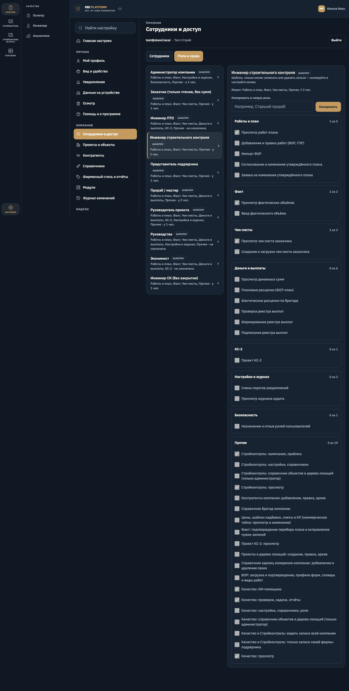
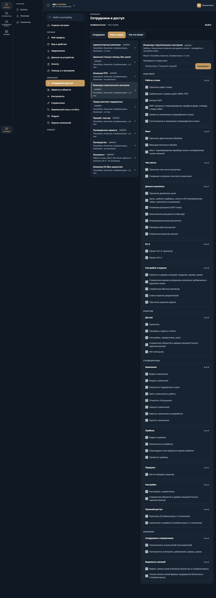
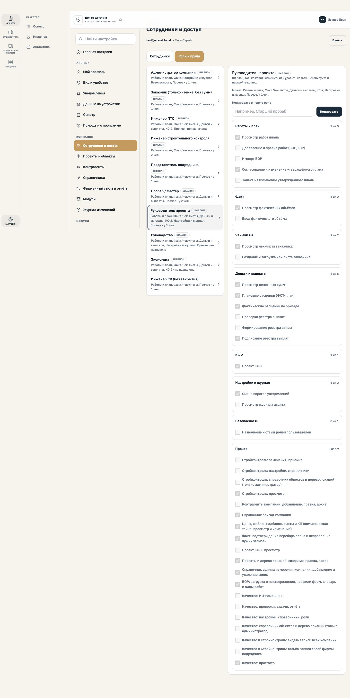
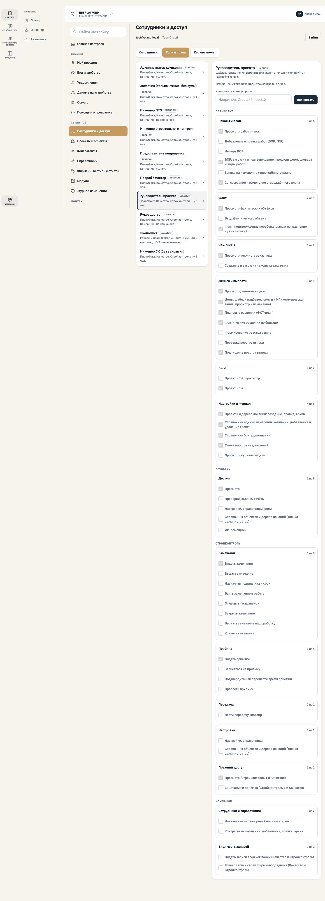
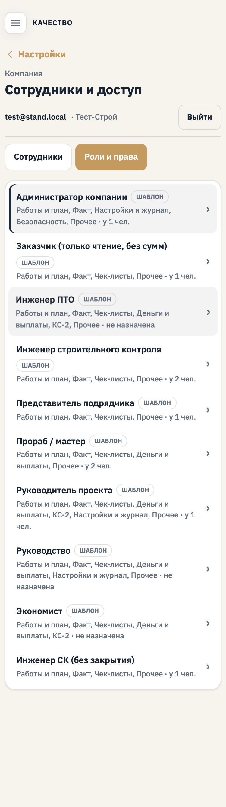
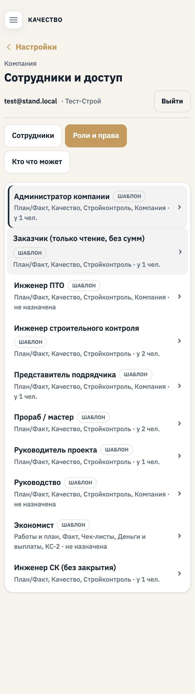
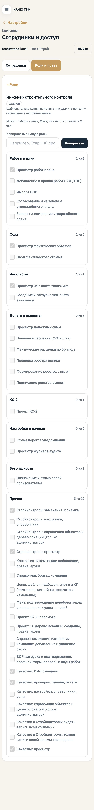
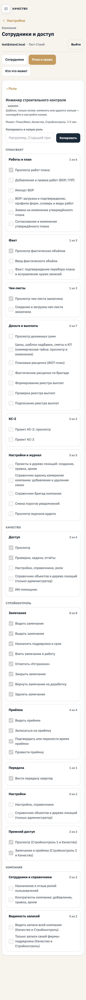
2. Новая вкладка «Кто что может» (только просмотр)
Объект → место (весь объект, корпус, секция) → модуль (Стройконтроль, План/Факт) → люди × действия. Колонки — из каталога. Человек с участием на часть объекта — с пометкой «только Корпус 1 · Секция 2». Изменить — в «Ролях и правах» и «Сотрудниках». Сервер проверяет то же самое.
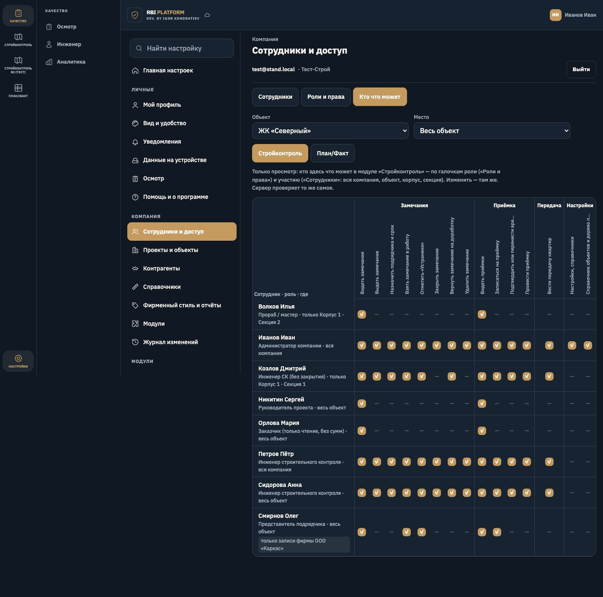
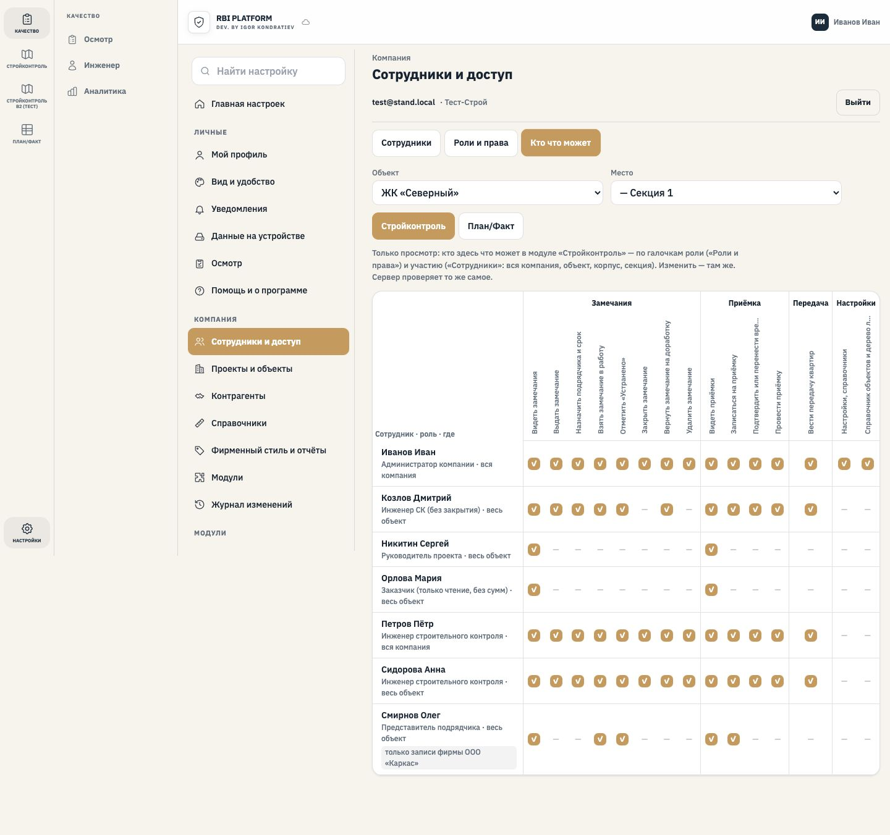
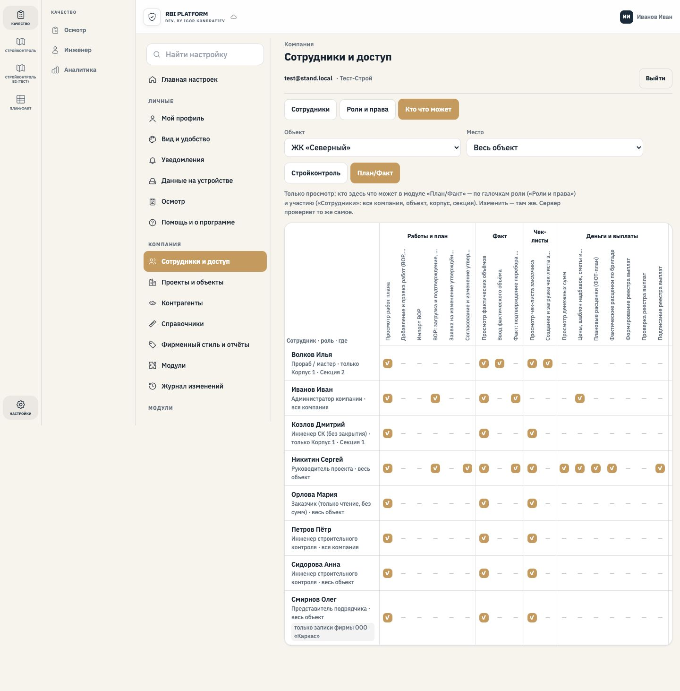